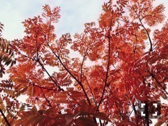

| 2014/12 03 Wed | 伊藤万理華 甘ったるい水。616回目 |

12月に入りました。
今年もあと1ヶ月！
12月の内に悔いのない年にしよう。
なので、ライブがんばります！
最近はEYESCREAM
ストリートジャック
SamuraiELOの撮影をしました、
どれもファッション誌だから嬉しい。
ありがたいー
発売をお楽しみに
あと、のぎ天の収録もして、
アルバムに向けていろいろやって、
ライブリハの真っ最中です。
そういえば、名古屋組のライブも
終わったようで！
大阪組の私の
ポジションとセトリです↓
何度目の青空か？(白石)
転がった鐘を鳴らせ！(白石)
夏のFree&Easy(白石)
遠回りの愛情(中田)
制服のマネキン(生駒)
おいでシャンプー(生駒)
どちらもメンバーが違って
同じ曲でも雰囲気
変わったんじゃないかな。
転がった鐘をならせ！
初めて踊ったんだけど、
好きになった〜楽しい。
マネキン、おいシャンでは
センターを務めました。
イベントやアンダーライブでも
何度か務めさせていただきましたが、
今回は選抜と混合だったので
新鮮な気持ちでした。
七瀬やいくちゃんの隣で踊ると、
あーまいやん生駒のアンダー
やってるんだなあって
余計に感じました。
こうやって任せてもらえるのは
嬉しいことだし、またひとつ
勉強になった日でした。
あらためて、大阪ライブ
来てくださったみなさん
ありがとうございました。
またこのライブやりたい ！
今はアンダーライブと
クリスマスライブのリハが
同時進行で頭が混乱している。
ノートにきれいにまとめなきゃー
日経エンタテイメントの
アイドルスペシャルが
乃木坂46大特集で、
メンバーひとりひとり見開きページ
でかなり分厚いことになってる。
嬉しいキャッチフレーズだった。
最近のぎ天に出てなかったんだけど、
次週久しぶりに登場します。
チェックよろしく ！
昨日はあみと川後とさゆの家に
泊まってパーリナイだったから
今日は早く寝ますね。
まりか